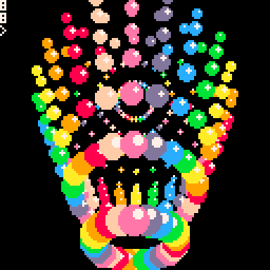
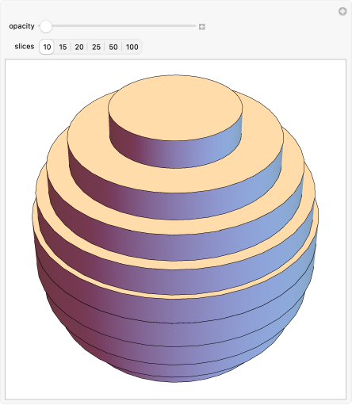
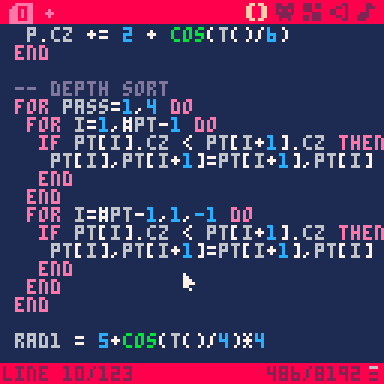
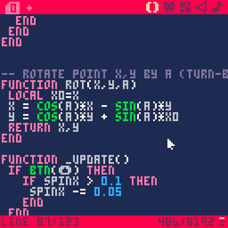

MATH AND ART
Project Description
Math And Art is a 3D visual experience created in PICO-8 that relies heavily on mathematics. Since PICO-8 does not have any built-in native 3D functionality, my goal was to understand how to create 3D visuals using only very basic tools.
Demonstration
You can try the experience directly in the web browser below. Use the directional arrow keys to interact with the 3D object. Enjoy!
Process
Having never taken a computer graphics class before, I studied other 3D projects created in the PICO-8 community to understand how developers create the illusion of three-dimensional objects on a flat screen. If you wish to see the complete code, you can check out my GitHub repository.
Here are the main ideas I focused on to make this experience work.Defining a 3D Shape
To define the spinning-top-like shape, I used mathematics to procedurally generate the object. The object is really a set of points whose coordinates are defined using polar coordinates.
The shape is divided into two parts: a cone and a sphere. The main idea used to define these shapes is that both can be viewed as stacks of circular disks with varying radii. By progressively changing the radius of each disk, it is possible to generate the geometry of the sphere and the cone and combine them into one single object.

Giving the Impression of Depth
Another challenge was giving the impression of depth on a 2D screen. Even though each point in the object has three coordinates (x,y,z), the screen can only display two dimensions.
To solve this, I needed an algorithm that would allow points closer to the viewer to be drawn in front of the others. The solution was to sort the points according to their z-coordinate before drawing them. Points with larger z-values are drawn after the others, which makes them appear on top.
In addition, the dots need to appear smaller the farther they are from the viewer. To achieve this effect, each point stores a size variable that depends on its z-coordinate. This size is updated every frame based on the point's depth.

3D Rotation
In order to make the object appear to spin, I needed a way to rotate its points in three dimensions. I implemented this by updating the coordinates of the points that make up the object over time.
To achieve this, I used mathematical rotation formulas based on trigonometric functions. Instead of implementing a direct 3D rotation, I used a simpler approach by applying two successive 2D rotations. First, the points are rotated in the x–z plane, which makes the object spin horizontally. Then, they are rotated in the y–z plane, which tilts the object vertically.
By updating these rotations every frame, the object appears to rotate smoothly in three-dimensions
